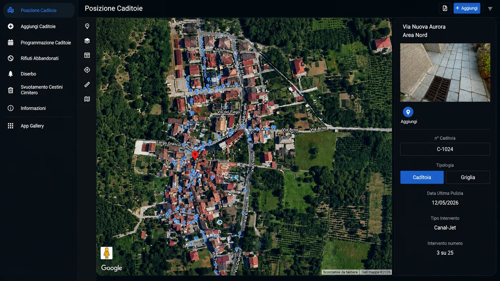
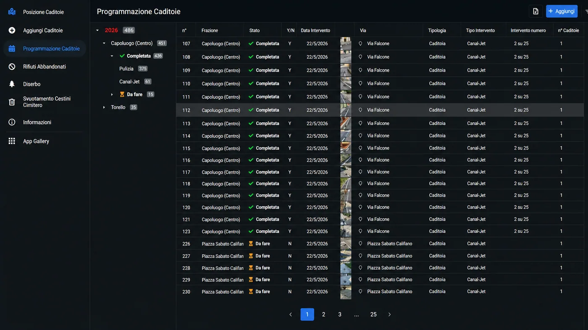

Una gestione moderna delle infrastrutture sul territorio
Molti enti, aziende e operatori territoriali gestiscono ancora il censimento con fogli di calcolo, fotografie separate e comunicazioni sparse. Una web app dedicata raccoglie posizione, fotografie, tipologia, stato operativo e storico degli interventi in un unico sistema.
Ogni caditoia visibile direttamente sulla mappa
La mappa consente di visualizzare tutti i punti censiti. Ogni caditoia può essere collegata a coordinate GPS, fotografia, identificativo e informazioni operative.

Tutte le informazioni organizzate in un unico elenco
L'archivio permette di consultare foto, numero identificativo, località, via, tipologia e data dell'ultima pulizia. Filtri e ricerca evitano fogli separati e dati duplicati.
Controllo chiaro delle attività completate e da fare
La programmazione distingue le attività completate da quelle ancora da eseguire. Ogni intervento resta collegato a data, stato, tipologia, area e punto preciso.

Dal censimento alla manutenzione: tutto resta tracciabile
La piattaforma trasforma il lavoro quotidiano in un processo chiaro e misurabile.
Geolocalizzazione GPS
Ogni punto è associato alla sua posizione.
Archivio fotografico
Le immagini documentano stato e riconoscibilità.
Storico manutenzioni
Controlli e pulizie restano sempre consultabili.
Domande frequenti sul censimento digitale delle caditoie
Come si censisce una caditoia con una web app?
L'operatore apre la scheda da smartphone, acquisisce posizione GPS e fotografia, assegna un codice identificativo e registra tipologia, stato e note. I dati diventano subito disponibili nella mappa e nell'archivio centrale.
La web app può essere usata direttamente sul territorio?
Sì. Un'interfaccia responsive consente alle squadre di consultare e aggiornare le schede da smartphone o tablet, evitando la successiva trascrizione di moduli cartacei.
Quali vantaggi offre lo storico degli interventi?
Lo storico permette di verificare pulizie, controlli e anomalie per ogni punto, programmare le manutenzioni e produrre report più affidabili sulle attività eseguite.
Vuoi digitalizzare il censimento delle caditoie?
Realizziamo web app personalizzate per aziende, enti e operatori territoriali.
Richiedi una consulenza gratuita